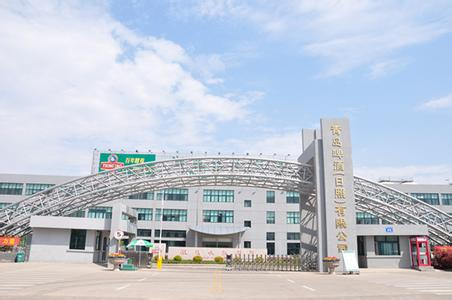
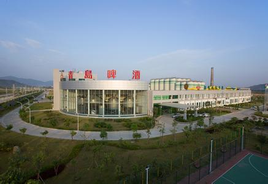
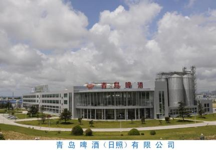

青岛啤酒股份有限公司的前身是国 营青岛啤酒厂, 1903年由英、德两国商人合资开 办， 是我国最早的啤酒生产企业。品牌价值805.85亿元，居 中国啤酒行业首位，是世界品牌500强、中国品牌500强。青岛啤酒以“成为拥 有全球影响力品牌的国际化大公司”为愿景，将不断创新，“用我们的激情，酿造全球消费者 喜好造快乐！”
青岛啤酒股份有限公司成立于1993年，（以下简称“青岛啤酒”）他的前身是1903年8月由德国商人和英国商人合资在青岛创建的日耳曼啤酒公司青岛公司，它是中国历史悠久的啤酒制造厂商，2008年北京奥运会官方赞助商。 1993年7月15日，青岛啤酒股票（0168）在香港交易所上市，是中国内地第一家在海外上市的企业。 同年8月27日，青岛啤酒（600600）在上海证券交易所上市，成为中国首家在两地同时上市的公司。  上世纪90年代后期，运用兼并重组、破产收购、合资建厂等多种资本运作方式，青岛啤酒在中国20个省、市、自治区拥有60多家啤酒生产基地，基本完成了全国性的战略布局。 青岛啤酒远销美国、日本、德国、法国、英国、意大利、加拿大、巴西、墨西哥等世界80多个国家和地区。  全球啤酒行业权威报告Barth Report依据产量排名，青岛啤酒为世界第六大啤酒厂商。 青岛啤酒几乎囊括了1949年新中国建立以来所举办的啤酒质量评比的所有金奖，并在世界各地举办的国际评比大赛中多次荣获金奖。1906年，建厂仅三年的青岛啤酒在慕尼黑啤酒博览会上荣获金奖；20世纪80年代三次在美国国际啤酒大赛上荣登榜首；1991年、1993年、1997年分别在比利时、新加坡和西班牙国际评比中荣获金奖；2006年，青岛啤酒荣登《福布斯》“2006年全球信誉企业200强”，位列68位；2007年荣获亚洲品牌盛典年度大奖；在2005年（首届）和2008年（第二届）连续两届入选英国《金融时报》发布的“中国十大世界级品牌”。其中2008年在单项排名中，青岛啤酒还囊括了品牌价值、优质品牌、产品与服务、品牌价值海外榜四项榜单之冠；2009年，青岛啤酒荣获上海证券交易所“公司治理专项奖——2009年度董事会奖”、“世界品牌500强”等诸多荣誉，并第七次获得“中国最受尊敬企业”殊荣；2010年，青岛啤酒第五次登榜《财富》杂志“最受赞赏的中国公司”。2015年青岛啤酒再次荣登中国品牌价值研究院主办的“中国品牌500强”榜单。